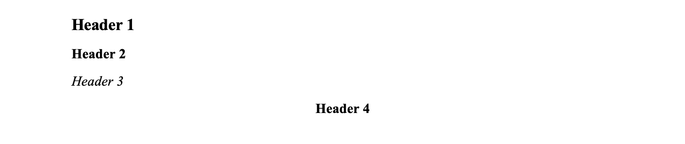

mayodocx.RmdHeaders and contact info can be removed using header = FALSE and contact = FALSE. Default contact information will be pulled from your .Rprofile if it is set.
The following headers are available in the default style. Headers 1-3 are left aligned and are used for headers and sub-headers. Header 4 is centered for tables.

To help generate publication-ready tables, consider using mRclwhip, which provides convenient wrappers around flextable and supports objects output from arsenal::tableby.
mayodown::mayodocx uses officedown as a base rendering engine. This allows for the use of additional styling options like page breaks, multi-column layouts, intermixed landscape and portrait pages, styled text, and more.
Some styling is still not feasible via mayodown. To help format tables and images, you can consider using the following macros in word once the document is rendered.
You will only have to add these macros to Word one time.
About Macros
Tables
Create a macro to help standardize the look of tables outside of what can be done by R.
Sub FormatTables()
If ActiveDocument.Tables.Count > 0 Then
Dim objTable As Object
Application.Browser.Target = wdBrowseTable
For Each objTable In ActiveDocument.Tables
objTable.AutoFitBehavior (wdAutoFitWindow)
Next
End If
End SubPut every table on it’s own page
Sub PagePerTable()
'
' PagePerTable Macro
'
'
For Each Tbl In ActiveDocument.Tables
Set myRange = Tbl.Range
With myRange
.Collapse Direction:=wdCollapseEnd
.InsertBreak Type:=wdPageBreak
End With
Next
End SubFigures
This macro reduces the size of all figures in an active document to 45% of its original size.
Sub FormatFigures()
Dim shp As InlineShape
For Each shp In ActiveDocument.InlineShapes
shp.ScaleHeight = 45
shp.ScaleWidth = 45
Next
End Sub